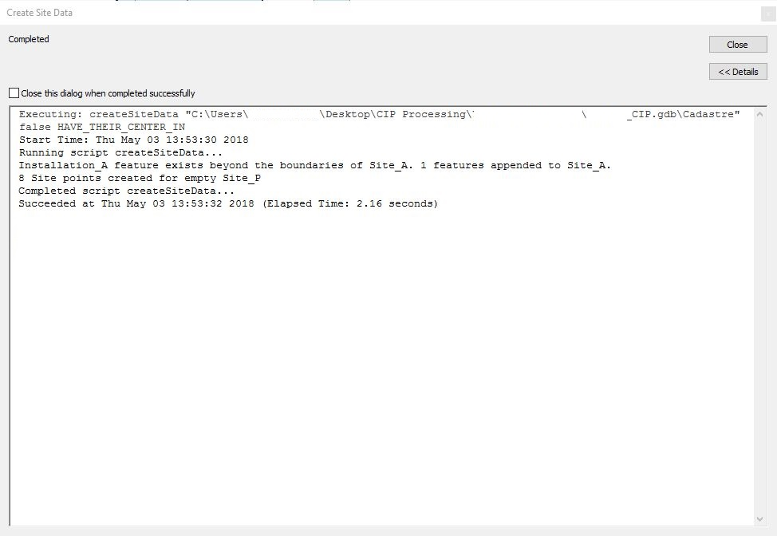
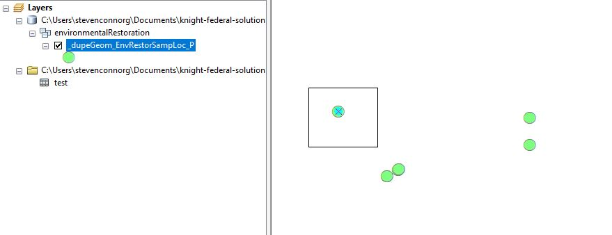
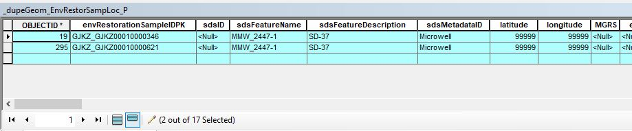
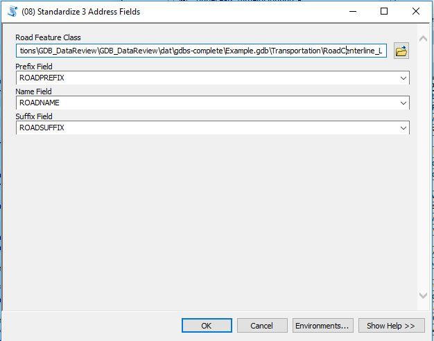
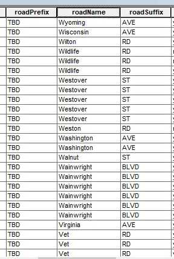
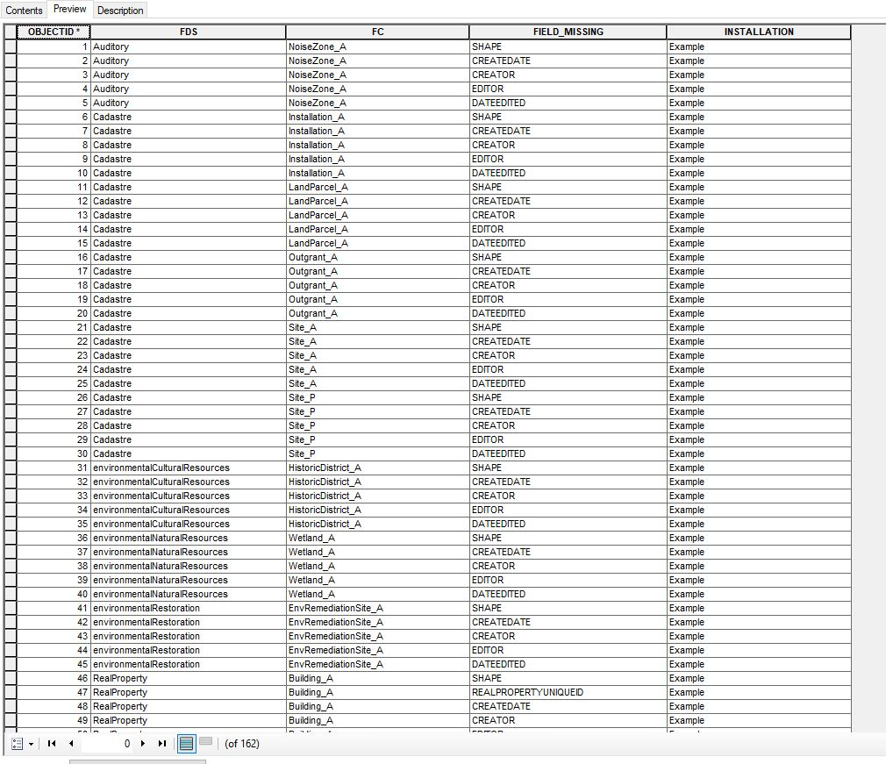
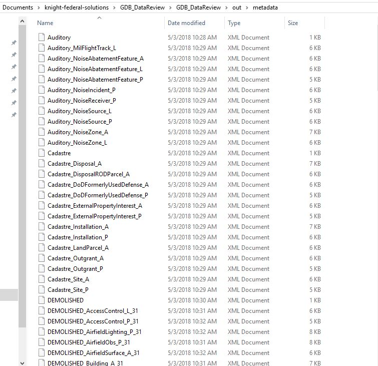
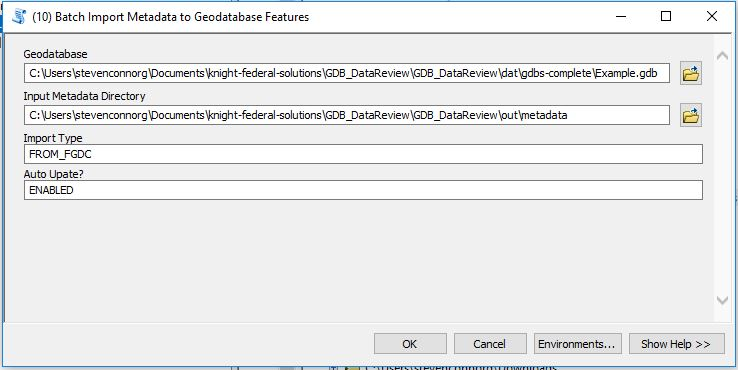
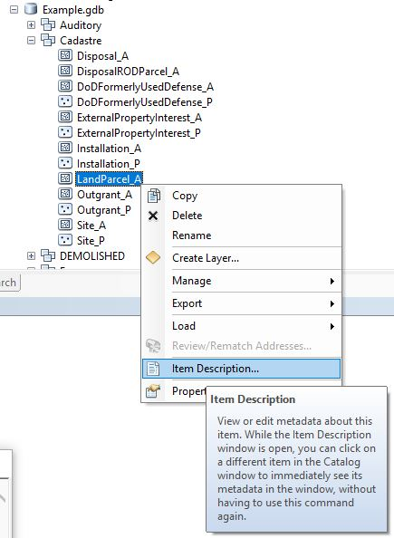

GDB_DataReview ArcMap Toolbox Tutorials
Steven C. Gonzalez & Marie C. Cline
Air Force Civil Engineering Center (AFCEC)
Geospatial Integration Office (GIO)
2018-05-18
Chapter 1 Toolbox Overview
This document gives an overview of how to use the GDB_DataReview ArcMap Toolbox.
The GDB_DataReview ArcMap Toolbox provides numerous Python script tools to expedite the review of geodatabases in comparison with a template geodatabase model. This toolbox was developed to aid Air Force (AF) installations in maintaining geospatial data in compliance with the current Air Force Data Model (GeoBase 3.1.0.1) developed under the AF GeoBase mission.
The GeoBase 3.1.0.1 data model is based upon the Spatial Data Standards for Facilities, Infrastructure, and Environment (SDSFIE) SDSFIE-V 3.1 Gold model, which complies with the Department of Defense Instruction (DoDI) 8130.01, Installation Geospatial Information and Service (IGI&S), but allows some greater flexibility within the program to aid the AF mission. As part of the IGI&S program, this toolbox also aids in standardizing methods to adhere to the Fiscal Year 2017 CIP data call required by DoDI 8130.01.
The GDB_DataReview Toolbox provides methods to:
- Update feature class data using both tabular and spatial joins,
- Find duplicate geometries, delete duplicate features, and check/repair feature geometries,
- Standardize road prefixes, names and suffixes or building addresses,
- Search for and summarize indeterminant and missing data in a geodatabase when compared with a template geodatabase
- Batch exporting and importing geodatabase metadata
Chapter 2 Opening the Toolbox
In order to access this toolbox, open ArcCatalog (or the ArcCatalog window within ArcMap). Within the ‘Catalog Tree’ windowpane in ArcCatalog, click the Folder Connections folder and navigate to the location of the toolbox. You may need to add a folder connection by right clicking ‘Folder Connections’ and clicking ‘Connect to Folder.’ Then navigate to the folder with the toolbox within the newly connected folder. Then, you can click the plus sign by the toolbox to view the tools within it (Fig. 2.1).
Figure 2.1: Opening the Create Site Data tool
Chapter 3 Extract CIP Geodatabase using XML Workspace Schema
3.1 Overview
This tool allows users to extract the Common Installation Picture (CIP) data with the proper schema from a source geodatabase. This tool uses an AFCEC GeoBase provided XML document to ensure the correct geodatabase schema is created.
3.2 Parameters
The tool has 4 parameters:
- Source Geodatabase (data type: Workspace/File Geodatabase) - The input geodatabase to extract CIP data from.
- Output Geodatabase Name (data type: String) - The name for the output geodatabase; exclude extension type.
- Output location (data type: Folder) - The location where the output geodatabase will be created.
- Geodatabase XML Workspace Schema (Template Schema) (data type: File) - This file is provided by AFCEC GeoBase and is located where the user chooses to save it.
3.3 How to Use
3.3.1 Begin by opening the toolbox
Navigate to the location of the script toolbox, then right-click the ‘Extract CIP with XML’ script tool to open (Fig. 3.1).Figure 3.1: Opening the Extract CIP Geodatabase using XML Workspace Schema tool
3.3.2 Fill out the parameters
Next, fill out the parameters for the tool. Here, we are using a source geodatabase which contains an installations full dataset. Next, we state the name of the output geodatabase containing the CIP data and where we want that geodatabase to be saved. Lastly, we point to the location where we saved the provided XML document (Fig. 3.2).Figure 3.2: Extract CIP Geodatabase using XML Workspace Schema tool parameters
3.4 Run the Tool and View Results
While the tool runs, we can see which feature dataset and feature classes are being processed, number of features being appended to the corresponding feature class in the new geodatabase, if a feature class is empty, and if the Real Property unique identifier field is properly named in the source data (Fig. 3.3).Figure 3.3: Extract CIP Geodatabase using XML Workspace Schema tool messages
After running the tool, the new CIP geodatabase is available for use in the location where it was saved (i.e.: [Output location] / [Output name]). Here, since we specified the output location to be the ‘Yaeger_ReviewCopy’ folder in the ‘CIP Processing’ directory on the user’s desktop with the output name ‘Yaeger_CIP,’ the new geodatabase will be found at “C:\Users\[username]\Desktop\Yaeger_CIP.gdb”
Chapter 4 Create Site Features
4.1 Overview
The Create Site Features tool allows users to use the Cadastre dataset’s Installation_A, Site_A, and Site_P feature classes to populate and update site data as needed.
This tool compares the geometry of Installation_A data (required to be populated) to Site_A data and populates features where needed. Upon the update of Site_A, points are created in Site_P for each feature in Site_A if they do not exist.
The user has the option to bypass the geometry compare between Installation_A and Site_A. When bypassed, no features are added to Site_A and site points are created using data that already exists in Site_A.
4.2 Parameters
The tool has 3 parameters:
- Input_Geodatabase (data type: Workspace) - This parameter must be the path of the input geodatabase to search Feature Datasets’ Feature Class features for duplicate features.
- Bypass Installation_A and Site_A Geometry Compare (data type: Boolean) - This parameter is a check box that is unchecked by default. If the user checks the box, the geometry compare between Installation_A and Site_A will be bypassed.
- Installation_A & Site_A Geometry Compare Type (data type: String Value List) - How do you want to limit the spatial join? By default, this parameter is set to “HAVE THEIR CENTER IN,” in order to only update target features that have their center in the source features. This parameter may be changed to any of the following values, as specified in the SelectByLocation_management tool documentation:
- INTERSECT —The features in the input layer will be selected if they intersect a selecting feature. This is the default.
- INTERSECT_3D —The features in the input layer will be selected if they intersect a selecting feature in three-dimensional space (x, y, and z).
- WITHIN_A_DISTANCE —The features in the input layer will be selected if they are within a specified distance of a selecting feature. Specify a distance in the Search Distance parameter.
- WITHIN_A_DISTANCE_3D —The features in the input layer will be selected if they are within a specified distance of a selecting feature in three-dimensional space. Specify a distance in the Search Distance parameter.
- WITHIN_A_DISTANCE_GEODESIC —The features in the input layer will be selected if they are within a specified distance of a selecting feature. Distance between features will be calculated using a geodesic method which takes into account the curvature of the earth and correctly deals with data near and across the dateline and poles.
- CONTAINS —The features in the input layer will be selected if they contain a selecting feature.
- COMPLETELY_CONTAINS —The features in the input layer will be selected if they completely contain a selecting feature.
- CONTAINS_CLEMENTINI —This spatial relationship yields the same results as COMPLETELY_CONTAINS with the following exception: if the selecting feature is entirely on the boundary of the input feature (no part is properly inside or outside), the feature will not be selected. Clementini defines the boundary polygon as the line separating inside and outside, the boundary of a line is defined as its end points, and the boundary of a point is always empty.
- WITHIN —The features in the input layer will be selected if they are within a selecting feature.
- COMPLETELY_WITHIN — The features in the input layer will be selected if they are completely within or contained by a selecting feature.
- WITHIN_CLEMENTINI — The result will be identical to WITHIN with the exception that if the entirety of the feature in the input layer is on the boundary of the feature in the selecting layer, the feature will not be selected. Clementini defines the boundary polygon as the line separating inside and outside, the boundary of a line is defined as its end points, and the boundary of a point is always empty.
- ARE_IDENTICAL_TO — The features in the input layer will be selected if they are identical (in geometry) to a selecting feature.
- INTERSECT —The features in the input layer will be selected if they intersect a selecting feature. This is the default.
4.3 How to Use
4.3.1 Begin by opening the toolbox
Navigate to the location of the script toolbox, then right-click the ‘Create Site Features’ script tool to open (Fig. 4.1).Figure 4.1: Opening the Create Site Features tool
4.3.2 Fill out the parameters
Next, fill out the parameters for the tool. Here, we want to select the Cadastre feature dataset for the geodatabase being processed. (Fig. 4.2). Last, we specify where we want to output the resulting tables, prefereably in an Installation Review geodatabase specifically for holding CIP processing results.Figure 4.2: Create Site Features Tool parameters
4.3.3 Run the Tool and View Results
While the tool runs (with Background Processing disabled), we can see messages and warnings from the tool. Warnings are provided if required feature classes are missing or data verification from the user is suggested. Messages include the number of features added to Site_A and the number of points added to Site_P (Fig. 9.3). Here, we see that an Installation_A feature exists beyond the boundaries of the Site_A features so 1 feature is appended to Site_A. Then, 8 site points were created for the empty Site_P feature class.Figure 4.3: Create Site Features tool messages
Figure 4.4: Before running the tool
Figure 4.5: Newly created Site A and Site P features after running the tool
Chapter 5 Join Fields and Calculate
5.1 Overview
The ArcGIS Python Script Tool “Join Fields and Calculate” may be used to update the destination values in a target feature layer field with the values in another table’s fields using a common key (join). This script will perform similarly as if you joined a table to a feature class to calculate a certain field based on another field in the joined table.
5.2 Parameters
The tool has 11 parameters:
Transfer_From (data type: Table View) - Which table are do you want to transfer data from? This parameter must be the path to a table(e.g.: Comma-separated Values (.csv) file, Excel Workbook (.xlsx) Sheet, Esri geodatabase table, etc.). This table will act as ‘source’ data.
Using_Join_Field (data type: Field) - From the source table, which field should be used to joinwith another feature class’ attributes? This will provide the ‘key’ to transfer data from the source table to the target table.
Source_Field (data type: Field) - From the source table, which field’s data do you want to transfer to the target table? This field’s data will be updated in the target feature class that have matching fields.
Destination_Feature (data type: Feature Layer or Feature Class) - Which feature class do you want to transfer data to? This parameter must be the path to a Esri Feature Class or Feature Layer. This table will act as ‘target’ data source.
Destination_Join_Field (data type: Field) - From the target table, which field should be used to joinwith another feature class’ attributes? This will provide the ‘key’ to transfer data from the source table to the target table.
Destination_Field (data type: Field) - From the target table, which field’s data do you want to transfer from the source table? This field’s data will be updated from the source table that have matching fields using the join fields provided.
Where_Clause (data type: String) - How should the source values be filtered? Default is “IS NOT NULL”, otherwise you will overwrite the target features will null values.
Remove_Leading_Zeros? (data type: Boolean) - Do you want to remove leading zeros from the Source Join Field prior to ‘joining’ the tables?
Remove_Blank_Spaces? (data type: Boolean) - Do you want to remove leading blank spaces from the Source Join Field prior to ‘joining’ the tables?
Source RPSUID Field (data type: Field) - Which field in the source table holds the Real Property Site Unique ID values? This field acts as a second join “key” to ensure that the correct Real Property Unique IDs are joined for each unique Site (i.e.: RPSUID).
Update RPSUID Field (data type: Field) - Which field in the Destination Feature holds the Real Property Site Unique ID values? This field acts as a second join “key” to ensure that the correct Real Property Unique IDs are joined for each unique Site (i.e.: RPSUID).
5.3 How to Use
5.3.1 Begin by opening the toolbox
Navigate to the location of the script tool, then right-click the ‘Join Fields and Calculate’ script tool to open (Fig. 5.1).
Figure 5.1: Opening the Tool
5.3.2 Fill out the parameters
Next, fill out the parameters for the tool. Here, we want to transfer the RPUID attributes (source field) from the ‘RPSUID_and_RPUID.csv’ table (transfer from) using the ‘FacilityNumber’ join field (Using_Join_Field) to the Building_A feature layer’s (Destination Feature) ‘realPropertyUniqueID’ field (Destination_Field) using the ‘buildingNumber’ field (Destination_Join_Field) (Fig. 5.2).
We also keep the default value in the ‘Where Clause’ parameter of ‘IS NOT NULL,’ in order to transfer RPUID from the source table where RPUIDs are not null, otherwise you may overwrite the target features will null values (Fig. 5.2).
We noticed that the ‘buildingNumber’ field has some leading zeros that we want to remove the beginning of the values, so we click the “Remove Leading Zeros” toggle (Fig. 5.2). If you noticed that the ‘Destination Join Field’ values have leading spaces, you can also check the ‘Remove_Leading_Zeros’ parameter to remove these spaces.
Figure 5.2: Tool parameters
Alternatively, you may also run this tool in ‘batch’ for multiple features in a geodatabase or geodatabases (Fig. 5.3).
Figure 5.3: Running a tool in batch

You may also get more information for the tool and each tool parameter by clicking the ‘Tool Help’ button at the bottom of the tool dialog box.
5.3.3 Run the Tool and View Results
Open the destinate Feature Class and view the update destination field values (Fig. 5.4, Fig. 5.5).
Figure 5.4: Attribues before running the Join Fields and Calculate tool

Figure 5.5: Attributes after running the tool, matching against both Building Number and RPSUID to update RPUID values
Chapter 6 Spatial Join and Calculate Field
6.1 Overview
This tool utilizes spatial joins to update field values in the target Feature Classes field to equal the source Feature Class fields in a source geodatabase. Using ‘wildcard’ fitlers, this tool allows users to update particular target Feature Datasets, Feature Classes, and Fields. For the purposes of this tool within the scope of the CIP Data Review task, target Fields are, by default, any fields that begin with “realPropertySiteUnique,” in order to udpate RPSUID fields called either “realPropertySiteUniqueIdentifier” or “realPropertySiteUniqueID”; however, this tool could be extended to any number of source/target Feature Class/Field values.
6.2 Parameters
The tool has 8 parameters:
Update Geodatabase (data type: Workspace/File Geodatabase) - The path to the input geodatabase to update Feature Classes in.
Source Feature (data type: Feature Class) - The path to the source Feature Class, which will be used to update Feature Class fields in target Feature Classes.
Source_Field (data type: Field) - The field within the source Feature Class used to update values in target Feature Classes.
Target Feature Dataset Wildcard (data type: String) - Within the input geodatabase, do you want to update only certain Feature Datasets? Use this wildcard to filter input geodatabase Feature Datasets. The Default is ‘*’ for ‘All Feature Datasets,’ but if you only wanted to update the Feature Classes in the ‘Auditory’ Feature Dataset, set this parameter to ‘Auditory.’ Similarly, if you only wanted to update Feature Classes within environmental Feature Datasets, set this parameter to ’environmental*‘, which will loop through all Feature Classes within Feature Datasets that start with ’environmental.’
Target Feature Class Wildcard (data type: String) - Within the input geodatabase, do you want to update only certain Feature Classes? Use this wildcard to filter input geodatabase Feature Classes to update. The Default is ‘*’ for ‘All Feature Classes,’ but if you only wanted to update Feature Classes called “roadCenterline_L”, set this parameter to ‘roadCenterline_L.’ Similarly, if you only wanted to update Feature Classes that begin with “road,” set this parameter to ’road*‘, which will loop through all Feature Classes that start with ’road.’
Target Field Wildcard (data type: String) - This parameter is used to filter fields within the target Feature Classes that you want to update with the Source Feature Classes source Field. For the purposes of this tool within the scope of the CIP Data Review, this parameter is automatically set to “realPropertySiteUnique*" in order to ‘catch’ all RPSUID fields within the SDSFIE 3.101 data model, where certain fields are called “realPropertySiteUniqueIdentifier” and others are called “realPropertySiteUniqueID.”
- Overlap Type (data type: String) - How do you want to limit the spatial join? By default, this parameter is set to “within,” in order to only update target features that are completely within the source features. This parameter may be changed to any of the following values, as specified in the SelectByLocation_management tool documentation:
- INTERSECT —The features in the input layer will be selected if they intersect a selecting feature. This is the default.
- INTERSECT_3D —The features in the input layer will be selected if they intersect a selecting feature in three-dimensional space (x, y, and z).
- WITHIN_A_DISTANCE —The features in the input layer will be selected if they are within a specified distance of a selecting feature. Specify a distance in the Search Distance parameter.
- WITHIN_A_DISTANCE_3D —The features in the input layer will be selected if they are within a specified distance of a selecting feature in three-dimensional space. Specify a distance in the Search Distance parameter.
- WITHIN_A_DISTANCE_GEODESIC —The features in the input layer will be selected if they are within a specified distance of a selecting feature. Distance between features will be calculated using a geodesic method which takes into account the curvature of the earth and correctly deals with data near and across the dateline and poles.
- CONTAINS —The features in the input layer will be selected if they contain a selecting feature.
- COMPLETELY_CONTAINS —The features in the input layer will be selected if they completely contain a selecting feature.
- CONTAINS_CLEMENTINI —This spatial relationship yields the same results as COMPLETELY_CONTAINS with the following exception: if the selecting feature is entirely on the boundary of the input feature (no part is properly inside or outside), the feature will not be selected. Clementini defines the boundary polygon as the line separating inside and outside, the boundary of a line is defined as its end points, and the boundary of a point is always empty.
- WITHIN —The features in the input layer will be selected if they are within a selecting feature.
- COMPLETELY_WITHIN — The features in the input layer will be selected if they are completely within or contained by a selecting feature.
- WITHIN_CLEMENTINI — The result will be identical to WITHIN with the exception that if the entirety of the feature in the input layer is on the boundary of the feature in the selecting layer, the feature will not be selected. Clementini defines the boundary polygon as the line separating inside and outside, the boundary of a line is defined as its end points, and the boundary of a point is always empty.
- ARE_IDENTICAL_TO — The features in the input layer will be selected if they are identical (in geometry) to a selecting feature.
- BOUNDARY_TOUCHES — The features in the input layer will be selected if they have a boundary that touches a selecting feature. When the inputs features are lines or polygons, the boundary of the input feature can only touch the boundary of the selecting feature, and no part of the input feature can cross the boundary of the selecting feature.
- SHARE_A_LINE_SEGMENT_WITH — The features in the input layer will be selected if they share a line segment with a selecting feature. The input and selecting features must be line or polygon.
- CROSSED_BY_THE_OUTLINE_OF — The features in the input layer will be selected if they are crossed by the outline of a selecting feature. The input and selecting features must be lines or polygons. If polygons are used for the input or selecting layer, the polygon’s boundary (line) will be used. Lines that cross at a point will be selected, not lines that share a line segment.
- HAVE_THEIR_CENTER_IN — The features in the input layer will be selected if their center falls within a selecting feature. The center of the feature is calculated as follows: for polygon and multipoint, the geometry’s centroid is used, and for line input, the geometry’s midpoint is used.
- INTERSECT —The features in the input layer will be selected if they intersect a selecting feature. This is the default.
Search Distance (data type: String) - You must provide a numeric value for the Search Distance parameter if f the overlap type parameter is equal to: “WITHIN_A_DISTANCE_GEODESIC”, “WITHIN_A_DISTANCE”, “WITHIN_A_DISTANCE_3D”, “INTERSECT”, “INTERSECT_3D”, “HAVE_THEIR_CENTER_IN”, “CONTAINS”, or “WITHIN”.
6.3 How to Use
6.3.1 Begin by opening the toolbox
Navigate to the location of the script tool, then right-click the ‘Calculate Feature RPSUIDs from Overlapping Polygon’ script tool to open (Fig. 6.1).
Figure 6.1: Opening the toolbox
6.3.2 Fill out the parameters
For this demostration, we want to update missing RPSUID values for 2 features in the Site_P Feature Class using RPSUID values from Site_A features that contain Site_P features 6.2).Figure 6.2: Missing RPSUID attributes for Site Point features
Figure 6.3: Tool parameters

Since we only want to update the Site_P features within the Cadastre Feature Dataset, we change the default value for the Target Feature Dataset Wildcard to “Cadastre,” since we know that the Site_P Feature Class is only found within the Cadastre Feature Dataset. Further, we change the default value of the Target Feature Class Wildcard parameters to “Site_P” in order to only update Site_P features within the Cadastre Dataset. Since we know that the RPSUID field names within all Feature Classes in the data model begin with ‘realPropertySiteUnique’, we can keep the default value for the Target Field Wildcard parameter in order to update the realPropertySiteUniqueID field in Site_P features with with the Source Field in the Source Feature Class. For the purposes of this demostration, we keep the default value for the Overlap Type parameter to “WITHIN,” in order to update the fields that begin with “realPropertySiteUnique” for features that are within each Source Feature Class feature. You may also get more information for the tool and each tool parameter by clicking the ‘Tool Help’ button at the bottom of the tool dialog box.
6.4 Run the Tool and View Results
If running the tool with Background Processessing disabled, we can see which RPSUIDs are being updated (Fig. 6.4).Figure 6.4: Tool parameters
Figure 6.5: AFter running the tool, new Site A feaures and new Site P features are created.
Chapter 7 Find Duplicate Geometries
7.1 Overview
The Find Duplicate Geometries tool allows users to search an entire geodatabase’s Feature Classes within Feature Datasets for features with duplicate geometries. This tool loops through each Feature Dataset’s Feature Class features and searches for duplicate geometries.
All features with duplicate geometries are written to the output .csv file, as specified, and describes the Feature Dataset and Feature Class with duplicate geometries, the OBJECTIDs of the duplicate geometries, and a summary, which gives the count of duplicate geometries spread over unique geometries. Further, this tool creates layer files for each Feature Class’ duplicate features, allowing users to edit their geodatabase directory from a temporary, filtered layer of only duplicate features to be evaluated further, instead of arbitrarily deleting duplicated features without further consideration.
7.2 Parameters
The tool has 5 parameters:
- Input_Geodatabase (data type: Workspace) - This parameter must be the path of the input geodatabase to search Feature Datasets’ Feature Class features for duplicate geometries.
- XY_Tolerance (data type: String) - The XY_Tolerance parameter will be applied to each vertex when evaluating if there is an identical vertex in another entity, and must be input in the same units as the the source geodatabase’s coordinate reference system (CRS).
- Z_Tolerance (data type: String) - The Z_Tolerance parameter will be applied to each vertex when evaluating if there is an identical vertex in another entity with regard to elevation, and must be input in the same units as the the source geodatabase’s coordinate reference system (CRS).
- Output_CSV (data type: File) - The path to the output Duplicate_Geometry_Summary .xlsx/.csv file.
- Output_Layers_Directory (data type: Folder) - The path to the directory/folder to store layer files with duplicate geometries.
7.3 How to Use
7.3.1 Begin by opening the toolbox
Navigate to the location of the script toolbox, then right-click the ‘Find Duplicate Geometries’ script tool to open (Fig. 7.1).Figure 7.1: Opening the Find Duplicate Geometries tool
7.3.2 Fill out the parameters
Next, fill out the parameters for the tool. Here, we want to search all Feature Classes within Feature Datasets in the Example.gdb for duplicate geometries using the default XY Tolerance and Z Tolerance values of ‘0’ (Fig. 7.2). We specify that we want the Duplicate Geometry Summary to be written to a Comma-separated Values (.csv) file called ‘test.csv.’ Further, we specify that we want all the duplicate Feature Class feature layers to be saved to the Output Layers Directory ‘layer.’Figure 7.2: Find Duplicate Geometries parameters
7.4 Run the Tool and View Results
While the tool runs (with Background Processing disabled), we can see the messages from the tool, showing how many duplicate features are found for each Feature Class (Fig. 7.3).Figure 7.3: Messages from the Find Duplicate Geometries tool
Figure 7.4: Find Duplicate Geometries parameters
Figure 7.5: Find Duplicate Geometries parameters

Figure 7.6: The features with duplicated geometries
Figure 7.7: Examining the attributes of duplicated features from layer files
Chapter 8 Check and/or Repair Geometries
8.1 Overview
The Check and/or Repair Geometries tool allows users to search an entire geodatabase’s Feature Classes for geometry problems. This tool loops through each Feature Dataset’s Feature Class features and searches for geometry problems, including null geometry, self intersections, duplicate vertexes, and more.
If geometry problems exists, an output table is created containing the following fields: CLASS, FEATURE_ID, and PROBLEM. The feature classes which contain geometry problems are then repaired.
After the repair is conducted, the subset of feature classes with repaired geometry problems are checked again for geometry problems to confirm their repair. Another output table is generated for the subset of feature classes. An empty output table confirms the geometry problems were correctly repaired.
8.2 Parameters
The tool has 2 parameters:
- Input_Geodatabase (data type: Workspace) - This parameter must be the path of the input geodatabase to search Feature Datasets’ Feature Class features for duplicate features.
- Output_Geodatabase (data type: Workspace) - This parameter should be the path of the Installation Review Geodatabase to compile all CIP processing outputs in a single location.
- Repair Geometries? (data type: Boolean) - Do you want to automatically repair geometries, where possible?
- Delete Null Geometries? (data type: Boolean) - Do you want to automatically delete features that have null/empty geometries?
8.3 How to Use
8.3.1 Begin by opening the toolbox
Navigate to the location of the script toolbox, then right-click the ‘Check and/or Repair Geometry’ script tool to open (Fig. 8.1).Figure 8.1: Opening the Check and/or Repair Geometries tool
8.3.2 Fill out the parameters
Next, fill out the parameters for the tool. Here, we want to search all Feature Classes within Feature Datasets in the Example.gdb for duplicate features (Fig. 8.2). Lastly, we specify where we want to output the resulting tables, prefereably in an Installation Review geodatabase specifically for holding CIP processing results.Figure 8.2: Check and/or Repair Geometries tool parameters
8.3.3 Run the Tool and View Results
While the tool runs (with Background Processing disabled), we can see the messages from the tool, which displays the following: how many feature classes are being checked for geometry problems, how many geometry problems that were found, where the output results are found, how many and which feature classes will be processed to repair geometry problems, how many feature classes are being re-checked for geometry errors, and how many geometry problems were found after the re-check (Fig. 8.3).Figure 8.3: Output messages from the Check and/or Repair Geometries tool
Figure 8.4: Output table of duplicate geometries found for each Feature Class, with the re-run showing that all geometries have been fixed.
Chapter 9 Delete Duplicate Features
9.1 Overview
The Delete Duplicate Features tool allows users to search an entire geodatabase’s Feature Classes for duplicated features This tool loops through each Feature Dataset’s Feature Class features and searches for duplicate features, not including geometry. That is, this tool searches for features within each feature class that have the same attributes across all fields in the attribute table, not including the fields listed below in the ‘Note’ section.
By default, this tool does not consider compare attributes in across any fields that are ‘OID’, ‘Guid’, ‘GlobalID’, ‘Blob’, or ‘Raster’ field types. Furthmore, the following fields are ignored in searching for duplicate features, by default (not case sensitive): ‘LAST_EDITED_DATE’, ‘LAST_EDITED_USER’, ‘CREATED_USER’, ‘CREATED_DATE’. As stated previously, this tool does not include geometries in the feature comparisons by default.
9.2 Parameters
The tool has 3 parameters:
- Input_Geodatabase (data type: Workspace) - This parameter must be the path of the input geodatabase to search Feature Datasets’ Feature Class features for duplicate features.
- XY_Tolerance (data type: String) - The XY_Tolerance parameter will be applied to each vertex when evaluating if there is an identical vertex in another entity, and must be input in the same units as the the source geodatabase’s coordinate reference system (CRS).
- Z_Tolerance (data type: String) - The Z_Tolerance parameter will be applied to each vertex when evaluating if there is an identical vertex in another entity with regard to elevation, and must be input in the same units as the the source geodatabase’s coordinate reference system (CRS).
9.3 How to Use
9.3.1 Begin by opening the toolbox
Navigate to the location of the script toolbox, then right-click the ‘Delete Duplicate Features’ script tool to open (Fig. 9.1).Figure 9.1: Opening the Delete Duplicate Features tool
9.3.2 Fill out the parameters
Next, fill out the parameters for the tool. Here, we want to search all Feature Classes within Feature Datasets in the Example.gdb for duplicate features (Fig. 9.2). We specify that we want to keep the default XY Tolerance and Z Tolerance parameters to zero, though this could be increased to allow duplicate geometry checks to be more lenient.Figure 9.2: Delete Duplicate Features parameters
9.3.3 Run the Tool and View Results
While the tool runs (with Background Processing disabled), we can see the messages from the tool, which displays how many duplicate features will be deleted across each feature class, if applicable (Fig. 9.3). Here, we see that 102 duplicates were found in the MilFlightTrack_L feature class across 51 unique features, indicating that each of the 51 features may have been duplicated once (51 x 2 = 102).Figure 9.3: Delete Duplicate Features messages
Chapter 10 Standardize 1 Address Field
10.1 Overview
The Standardize Address Field tool allows users to standardize 1 address field in a feature class. This tool works by searching the address field within the input feature class, then replaces any street prefixes (e.g.: North, north, East, West) with a standard prefix abbreviation (i.e.: “N”, “S”, “E”, and “W”), while all suffixes (e.g.: AVE, Avenue, Street) are reformatted to standard USPS suffixes.
10.2 Parameters
The tool has 2 parameters:
- Feature Class (data type: Feature Class ) - The path to the Feature Class with the address field to standardize.
- Field (data type: Field) - The address field in the Feature Class to be standardized.
10.3 How to Use
10.3.1 Begin by opening the toolbox
Navigate to the location of the script toolbox, then right-click the ‘Standardize 1 Address Field’ script tool to open (Fig. 10.1).Figure 10.1: Opening the Standardize Address Field tool
10.3.2 Fill out the parameters
Next, fill out the parameters for the tool. Here, we want to update the buildingAddress field in the Building_A Feature Class in the Example.gdb (Fig. 10.2) because we notice none standardized addresses in the field (Fig. 10.3).Figure 10.2: Tool parameters to run
Figure 10.3: The unstandardized address field attributes before running the tool.
10.3.3 Run the Tool and View Results
After the tool has run, we can see that the building address values have been appropriately standardized (Fig. 10.4).Figure 10.4: The standardized address field attributes after running the tool.
Chapter 11 Standardize Road Prefix, Name, and Suffix Fields
11.1 Overview
The purpose of this tool is to standardize the 3 field (road prefix, road name, and road suffix) values within a feature class. This tool works by first searching the ROADNAME field within that feature class, then removes any prefixes or suffixes within the field and moves them to the appropriate field. For all prefixes and suffixes found, the prefixes are reformatted to “N”, “S”, “E”, and “W.” For all suffixes found, the suffixes are reformatted to standard USPS suffixes.
11.2 Parameters
The tool has 4 parameters:
- Road Feature Class (data type: Feature Class) - This parameter must be the path to the Feature Class that has the 3 road fields to be standardized.
- Prefix Field (data type: Field) - The field within the feature class that has or should have road prefixes.
- Name Field (data type: Field) - The field within the feature class that has road names.
- Suffix Field (data type: Field) - The field within the feature class that has or should have road suffixes.
11.3 How to Use
11.3.1 Begin by opening the toolbox
Navigate to the location of the script toolbox, then right-click the ‘Standardize 3 Address Fields’ script tool to open (Fig. 11.1).Figure 11.1: Opening Standardize Road Prefix, Name, and Suffix tool

11.3.2 Fill out the parameters
Next, fill out the parameters for the tool. Here, we want to update the road prefix, road name, and road suffix fields in the RoadCenterline_L feature class (Fig. 11.2). The fields can be derived directly from the Feature Class by using the drop-down menu.Figure 11.2: Standardize Road Prefix, Name, and Suffix tool parameters
11.4 Run the Tool and View Results
Before running the tool, we see that, indeed, the road prefixes and road suffixes are incorrectly populated inside the road name field Open the destinate Feature Class and view the update destination field values (Fig. 11.3).Figure 11.3: Unstandardized road prefixes, names, and suffixes before running the tool.
Figure 11.4: Standardized road prefixes, names, and suffixes after running the tool.
Chapter 12 Search for Missing and Indeterminant Data
12.1 Overview
Search a ‘source’ geodatabase for indeterminate data from feature dataset/feature class combinations in a target geodatabase. First, searches for missing feature datasets in target geodatabase not in source geodatabase. Then, searches for feature classes in ‘x’ feature dataset. Then, for each feature class in the source geodatabase, this tool searches for ‘indeterminate’ values in each field. Indeterminate values, here, means any null, to be determined (TBD), or ‘other’ values.
This tool creates 4 output tables, each prepended with the name of the Model_Geodatabase (e.g.: If your ‘model’ geodatabase called ‘CIP’, the tables will be called (CIP_MissingFDS, CIP_Missing_FCs, CIP_MissingFields, and CIP_MissingData). These tables include:
- [modelGeodatabaseName]_MissingFDS - Gives a list of Feature Datasets within the target geodatabase that are not included in the source geodatabase.
- [modelGeodatabaseName]_MissingFCs - Gives a list of Feature Classes for each Feature Dataset within the target geodatabase that are not included in the source geodatabase.
- [modelGeodatabaseName]_MissingFields - Gives a list of Fields for each Feature Dataset/Feature Class combination within the target geodatabase that are not included in the source geodatabase.
- [modelGeodatabaseName]_MissingData - For each Feature Dataset/Feature Class combination in both the target and source geodatabase, this table gives an overview of missing attributes for each field in the source geodatabase’s Feature Class.
- For Fields in each of the source geodatabase’s Feature Classes, this table highlights fields not included in the target geodatabase’s Feature Class under the ‘FIELD_NONSDS’ column (e.g.: ‘FIELD_NONSDS’ = F when fields are included in both geodatabases, and ‘FIELD_NONSDS’ = T when the field exists in the source geodatabase for said Feature Class, but not the target geodatabase’s Feature Class).
- This table then lists whether or not the feature class is empty (i.e.: EMPTY_FC = T or F).
- Then, for each field, the MissingData table gives a count of Null1 Null values include :None, “None”, “none”, “NONE”, “”,“-99999”,“77777”,77777, " “,”NA“,”na“,”N/A“,”n/a“,”NULL“,”Null“,”
“,”null“,” , ‘TBD’2 TBD values include : “tbd”,“TBD”,“To be determined”,“Tbd”,99999,“99999”, and ‘Other’3 Other values include : “Other”, “other”, “OTHER”,“88888”,88888 features, further giving the counts of each value in ‘NULL_VALUE_COUNTS’, ‘TBD_VALUE_COUNTS’, and ‘OTHER_VALUE_COUNTS’ fields.“” “,” “,” “,” “,” “ - The sum of the Null, TBD, and Other features are populated in the ‘TOTAL_INDT_COUNT’ (i.e.: Total indeterminant feature count), with the ‘TOTAL_DET_COUNT’ column giving the total number of features with ‘determinated’ values (i.e.: not indeterminant values).
- The POP_VALS column lists the count of all unique populated values for each field, while the INC_POP_VALS column lists any field values that are not included in the field’s domain.
12.2 Parameters
The tool has 2 parameters:
- Source Geodatabase (data type: Workspace/File Geodatabase) - The path to the file geodatabase to be searched for indeterminant/missing data.
- Target Geodatabase (data type: Workspace/File Geodatabase) - The path to the file geodatabase with which the source geodatabase will be compared against.
12.3 How to Use
12.3.1 Begin by opening the toolbox
Navigate to the location of the script toolbox, then right-click the ‘Search for Indeterminant Data’ script tool to open (Fig. 12.1).Figure 12.1: Opening the Search for Missing and Indeterminant Data tool
12.3.2 Fill out the parameters
Next, fill out the parameters for the tool. Here, we want to compare the ‘Example.gdb’ against the ‘CIP.gdb’ (Fig. 12.2). The fields can be derived directly from the Feature Class by using the drop-down menu.Figure 12.2: Opening the Search for Missing and Indeterminant Data tool
12.4 Run the Tool and View Results
While we run the tool, we can see view the messages of the tool, giving a listing of the fields being searched for indeterminant data with the counts of indeterminant values (Fig. 12.3).Figure 12.3: Search for Missing and Indeterminant Data tool messages
Figure 12.4: Search for Missing and Indeterminant Data output tables
Figure 12.5: The output Missing Feature Datasets table
Figure 12.6: The output Missing Feature Classes table
Figure 12.7: The output Missing Feature Fields table
Figure 12.8: The output Missing Data table
Chapter 13 Summarise Indeterminant/Missing Data Tables
13.1 Overview
This tool takes the 4 tables created with the Search for Missing and Indeterminant Data tool and creates an outbook Excel Workbook which includes the following sheets:
- Summary_by_FC - gives the counts and percentages of ‘Other’, ‘Null’, and ‘TBD’ cells by Feature Class, as well as the total counts and percentages of indeterminate (Other + Null + TBD) and determinate cells (not Other, Null, or TBD),
- Summary_by_Field - gives the same statistics as the Summary_by_FC sheet, but broken down further by Feature Class Fields,
- Empty Feature Classes - gives the standard Feature Classes in the comparison geodatabase not included in the input geodatabase(i.e.: Feature Classes included in comparison geodatabases)
- Indeterminate_Overview, gives :
- The total count of feature classes that are empty
- The total number of standard feature classes that are empty
- The source geodatabase installation name
- The total number of missing feature classes
- The total number of missing feature datasets
- The total number of empty fields from empty feature classes
- The total number of empty fields from non-empty feature classes.
13.2 Parameters
The inputs required for this tool to work are the 4 output tables created with the “Search for Indeterminate Data” script tool from one comparison geodatabase (repeat: ensure these are all from the same comparison geodatabase [i.e.: [comparison GDB] is the same across all four input tables]):
- comparisonGDBname_MissingFDS Table (data type: GDB Table) - The path to the MissingFDS table created with the Search for Missing and Indeterminant Data tool for one ‘target’ geodatabase.
- comparisonGDBname_MissingFCs (data type: GDB Table) - The path to the MissingFCs table created with the Search for Missing and Indeterminant Data tool for one ‘target’ geodatabase.
- comparisonGDBname_MissingFields (data type: GDB Table) - The path to the MissingFields table created with the Search for Missing and Indeterminant Data tool for one ‘target’ geodatabase.
- comparisonGDBname_MissingData (data type: GDB Table) - The path to the MissingData table created with the Search for Missing and Indeterminant Data tool for one ‘target’ geodatabase.
- Output Excel File’ (data type: .xlsx file) - The path to the output Excel Workbook to save the summary sheets to.
This script tool requires a few non-standard ArcGIS 10.x Python modules: numpy and pandas. To install these modules for use in ArcGIS, you can download and install the modules using the commands “pip install pandas” and “pip install numpy.”
To do this, follow these instructions:
- Press the windows key on your keyboard
- Type “cmd” to open the command prompt window
- Set your working directory to the ArcGIS Python directory with the ‘pip’ command (e.g.: if you are running ArcMap10.6, input: “C:/Python27/ArcGIS10.6/Scripts”)
- Type ‘pip install numpy’ and press enter, then type ‘pip install pandas’ and press enter. If all goes well, you will have these modules successfully installed for use in ArcGIS’ Python distribution
13.3 How to Use
13.3.1 Begin by opening the toolbox
Navigate to the location of the script toolbox, then right-click the ‘Summarise Indeterminant Data Tables’ script tool to open (Fig. 13.1).Figure 13.1: Opening the Summarise Indeterminant Data Tables tool
13.3.2 Fill out the parameters
Next, fill out the parameters for the tool. Here, we want to summarise the Indeterminant Data Tables created in the Example.gdb that was created when comparing against the CIP geodatabase. Again, be sure that these input tables all derive from the same target geodatabase!Figure 13.2: Setting the parameters for the Summarise Indeterminant Data Tables tool

13.4 Run the Tool and View Results
While we run the tool, we can see view the messages of the tool (Fig. 13.3).Figure 13.3: Opening the Delete Duplicate Features tool
Figure 13.4: The output Excel Workbook sheets Summary by FC, Summary by Field, Empty Feature Classes, and Indeterminate Overview
Figure 13.5: The output Summary by Feature Class table
Figure 13.6: The output Summary by Field table
Figure 13.7: The output Empty Feature Classes table
Figure 13.8: The output Indeterminate Overview table
Chapter 14 Batch Export XML Metadata to Directory
14.1 Overview
This tool provides an automated method to export metadata for each Feature Dataset and Feature Class (within Feature Datasets) in the input geodatabase, by exporting each item’s metadata to an .xml file to an output directory, as specified. This tool allows you to specify a metadata translator. Within the scope of the Department of Defense Instruction (DoDI) 8130.01, it is recommended that you download and install the SDSFIE-M Metadata Style for ArcGIS from The Spatial Data Standards for Facilities, Infrastructure, and Environment (SDSFIE) Metadata standard. In this case, you would change the input the metadata translator to the ARCGIS2SDSFIE-M.xml4 Under standard Windows installations, this should be located at “C:/Program Files (x86)/ArcGIS/Desktop10.6/Metadata/Translator/ARCGIS2SDSFIE-M.xml”. provided with the SDSFIE-M Metadata Style for ArcGIS software.^[Be sure to install the software to the software path for your ArcGIS distribution currently installed to view this metadata style within ArcCatalog, for example: “C:/Program Files (x86)/ArcGIS/Desktop10.X/”
If the source metadata is a Feature Dataset, the output .xml file is named after the Feature Dataset. Alternatively, the output .xml metadata for Feature Classes are exported with the Feature Dataset name prepended before the Feature Class name.
These output .xml files can more easily be edited in batch using the Batch Metadata Modifier Tool developed out of the University of Idaho’s Interactive Numeric & Spatial Information Data Engine (INSIDE) geospatial data clearinghouse.
14.2 Parameters
The tool has 3 parameters:
- Input Geodatabase (data type: Workspace/File Geodatabase) - The input geodatabase to export Feature Dataset/Feature Class metadata from.
- Metadata Translator (data type: .XML file) - The metadata translator to be used to create output .xml metadata files. These files are typically located at “C:/Program Files (x86)/ArcGIS/[Desktop10.x]/Metadata/Translator/. Please change according to your ArcGIS installation file path.
- Output Directory (data type: Folder) - The folder within which to write output .xml metadata files.
14.3 How to Use
14.3.1 Begin by opening the toolbox
Navigate to the location of the script toolbox, then right-click the ‘Batch Export Metadata to Directory’ script tool to open (Fig. 14.1).Figure 14.1: Opening the Batch Export Metadata tool
14.3.2 Fill out the parameters
Next, fill out the parameters for the tool. Here, we want to export metadata for all Feature Datasets and all Feature Classes (within those Feature Datasets) within the Example.gdb geodatabase using the default ARCGIS2FGDC metadata translator that comes with ArcGIS to a new directory called ‘metadata’ (Fig. 14.2).Figure 14.2: Batch Export Metadata tool parameters

14.4 Run the Tool and View Results
After running the tool, we can view the output metadata files inside the output directory specified (Fig. 14.3). For Feature Classes, the output .xml files has the associated Feature Dataset name prepended to the filename, while Feature Dataset metadata file is simply the name of the Feature Dataset.
Figure 14.3: Batch Export Metadata output .xml files for each Feature Dataset/Feature Class
Chapter 15 Batch Import Metadata to GDB Features from XML Metadata Directory
15.1 Overview
This tool provides an automated method to import metadata for each Feature Dataset and Feature Class (within Feature Datasets) in the input geodatabase, following the output .xml file naming convention created with the [Batch Export Metadata] tool, and potentially updated using the Batch Metadata Modifier Tool developed out of the University of Idaho’s Interactive Numeric & Spatial Information Data Engine (INSIDE) geospatial data clearinghouse. As per SDSFIE standards, it is recommended that you view this metadata using the SDSFIE-M Metadata Style for ArcGIS5 When installing this tool, be sure to install it to the location of your current ArcGIS distribution on your computer, typically located at C:/Program Files (x86)/ArcGIS/Desktop10.6/, replacing with the approproate ArcGIS version.
Alternatively, if you wish to import metadata from Feature Classes in a Esri geodatabase, you should use the [Batch Import Metadata from GDB] tool.
15.2 Parameters
The tool has 2 parameters6 More information may be found on the help page for ArcMap’s Metadata Importer.:
- Input Geodatabase (data type: Workspace/File Geodatabase) - The input geodatabase to export Feature Dataset/Feature Class metadata from.
- Input Metadata Directory (data type: Folder) - The folder with the .xml files to import into the geodatabase features.
15.3 How to Use
15.3.1 Begin by opening the toolbox
Navigate to the location of the script toolbox, then right-click the ‘Batch Import Metadata’ script tool to open (Fig. 15.1).Figure 15.1: Opening the Batch Import Metadata tool
15.3.2 Fill out the parameters
Next, fill out the parameters for the tool. Here, we want to export metadata for all Feature Datasets and all Feature Classes (within those Feature Datasets) within the Example.gdb geodatabase using the default ARCGIS2FGDC metadata translator that comes with ArcGIS to a new directory called ‘metadata’ (Fig. 15.2).Figure 15.2: Batch Import Metadata tool parameters
15.4 Run the Tool and View Results
While the tool runs, we can see which .xml files are being imported to each Feature Dataset’s/Feature Class’ metadata, as well as which Feature Datasets/Feature Classes do not have matching .xml files in the output directory (Fig. 15.3).Figure 15.3: Batch Import Metadata tool messages
After running the tool, we can view the update Item Descriptions for the Feature Classes and Feature Datasets imported with the .xml files (Fig. 15.4). You can also change the way ArcMap displays the metadata by going to Customize > ArcMap Options in ArcMap, then clicking the Metadata tab and changing the Metadata Style in the drop-down menu. You can find more information on Item Descriptions on Esri’s Item Desecription Help Page.
Figure 15.4: Opening the Item Description to view updated Metadata
Chapter 16 Batch Import Metadata to GDB Features from GDB
16.1 Overview
This tool provides an automated method to import metadata for each Feature Dataset and Feature Class (within Feature Datasets) in the input geodatabase from a source geodatabase. This tool different from the [Batch Import Metadata] tool because it imports metadata from a source geodatabase and not from a directory of metadata .xml files.
16.2 Parameters
The tool has 3 parameters7 More information of the Import Type and Auto Update parameters may be found at the help page for ArcMap’s Import Metadata Tool.:
- Source Geodatabase (data type: Workspace/File Geodatabase) - The input geodatabase to export Feature Dataset/Feature Class metadata from.
- Target Geodatabase (data type: Workspace/File Geodatabase) - The geodatabase to input metadata from the Source Geodatabase from.
- Sync Type (data type: String) - How would you like the metadata items to be Syncronized upon import?8 More information on Sync Type paramters may be found at the help file for the Synchronize Metadata function
- ALWAYS — Properties of the source item are always added to or updated in its metadata. Metadata will be created if it doesn’t already exist. This is the deault.
- ACCESSED — Properties of the source item are added to or updated in its metadata when it is accessed. Metadata will be created if it doesn’t already exist.
- CREATED — Metadata will be created and properties of the source item will be added to it if the item doesn’t already have metadata.
- NOT_CREATED — Properties of the source item are added to or updated in existing metadata.
- OVERWRITE — The same as “ALWAYS” except all information that can be recorded automatically in the metadata will be recorded. Any properties typed in by a person will be replaced with the item’s actual properties.
- SELECTIVE — The same as “OVERWRITE” except the title and the content type will not be overwritten with default values for the item. Used when metadata is upgraded to the ArcGIS 10.x metadata format.
16.3 How to Use
16.3.1 Begin by opening the toolbox
Navigate to the location of the script toolbox, then right-click the ‘Batch Import Metadata to Geodatabase from GDB’ script tool to open (Fig. 15.1).Figure 16.1: Opening the Batch Import Metadata tool
16.3.2 Fill out the parameters
Next, fill out the parameters for the tool. Here, we want to import metadata from the geodatabas with metadata to the geodatabase without metadata.Figure 16.2: Batch Import Metadata tool parameters
16.4 Run the Tool and View Results
While the tool runs, we can see which geodatabase Feature Datasets/Feature Classes are being imported to each Feature Dataset’s/Feature Class’ metadata, as well as which Feature Datasets/Feature Classes do not have matching .xml files in the source geodatabase (Fig. 16.3).Figure 16.3: Batch Import Metadata tool messages
After running the tool, we can view the update Item Descriptions for the Feature Classes and Feature Datasets imported from the source geodatabase (Fig. 16.4). If importing SDSFIE-M metadata, it is recommended that you alter the way ArcMap displays the metadata by going to Customize > ArcMap Options in ArcMap, then clicking the Metadata tab and changing the Metadata Style in the drop-down menu. To do this, you must view this metadata using the SDSFIE-M Metadata Style for ArcGIS9 When installing this tool, be sure to install it to the location of your current ArcGIS distribution on your computer, typically located at C:/Program Files (x86)/ArcGIS/Desktop10.6/, replacing with the approproate ArcGIS version. After doing this, we can view the SDSFIE-M metadata style within ArcCatalog.
You can find more information on Item Descriptions on Esri’s Item Desecription Help Page.
Figure 16.4: Opening the Item Description to view updated Metadata
Chapter 17 Production Information
This report was created using R (R Core Team 2017R Core Team. 2017. R: A Language and Environment for Statistical Computing. Vienna, Austria: R Foundation for Statistical Computing. https://www.R-project.org/.) and RStudio (RStudio Team 2015RStudio Team. 2015. RStudio: Integrated Development Environment for R. Boston, MA: RStudio, Inc. http://www.rstudio.com/.) with the following packages:
- bookdown (Xie 2018aXie, Yihui. 2018a. Bookdown: Authoring Books and Technical Documents with R Markdown. https://github.com/rstudio/bookdown.)
- knitr (Xie 2018bXie, Yihui. 2018b. Knitr: A General-Purpose Package for Dynamic Report Generation in R. https://CRAN.R-project.org/package=knitr.)
- rmarkdown (Allaire et al. 2017Allaire, JJ, Yihui Xie, Jonathan McPherson, Javier Luraschi, Kevin Ushey, Aron Atkins, Hadley Wickham, Joe Cheng, and Winston Chang. 2017. Rmarkdown: Dynamic Documents for R. https://CRAN.R-project.org/package=rmarkdown.)
- tinytex (Xie 2018cXie, Yihui. 2018c. Tinytex: Helper Functions to Install and Maintain ’Tex Live’, and Compile ’Latex’ Documents. https://CRAN.R-project.org/package=tinytex.)
For posterity, package information is listed below:
## R version 3.4.1 (2017-06-30)
## Platform: x86_64-w64-mingw32/x64 (64-bit)
## Running under: Windows 10 x64 (build 16299)
##
## Matrix products: default
##
## locale:
## [1] LC_COLLATE=English_United States.1252
## [2] LC_CTYPE=English_United States.1252
## [3] LC_MONETARY=English_United States.1252
## [4] LC_NUMERIC=C
## [5] LC_TIME=English_United States.1252
##
## attached base packages:
## [1] stats graphics grDevices utils datasets methods base
##
## other attached packages:
## [1] tinytex_0.5 knitr_1.20 rmarkdown_1.9.12 bookdown_0.7.8
##
## loaded via a namespace (and not attached):
## [1] Rcpp_0.12.16 tufte_0.3 digest_0.6.15 rprojroot_1.3-2
## [5] backports_1.1.2 magrittr_1.5 evaluate_0.10.1 highr_0.6
## [9] stringi_1.1.7 rstudioapi_0.7 tools_3.4.1 stringr_1.3.0
## [13] jpeg_0.1-8 xfun_0.1 yaml_2.1.18 compiler_3.4.1
## [17] htmltools_0.3.6